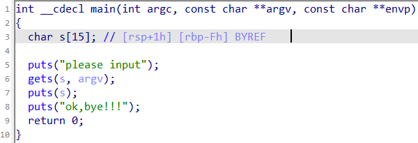

ctf-pwn-buuctf-1
test_your_nc
拿到一個檔案，和題目名稱為test_your_nc，先以nc連上server。
nc node4.buuoj.cn 28172 |
沒有看到任何東西，隨便輸入個字串發現提示
/bin/sh: 2: 字串: not found |
感覺是linux的指令，ls查看一下內容。
bin |
原本我忽略了裡面有什麼東西，還打開IDA來看，結果好像也只是把輸入送進stseam裡面，再看一次ls的輸出，發現就有一個flag檔，直接用cat打開來看。
cat flag |
取得flag
flag{5a1968c5-04dd-46e9-9832-c704e1d65513} |
rip
用IDA打開附件的程式進行反邊譯，得到下圖。
0000000000401191 的位置上有一個 call _system 的動作，意味著理論上只要讓程式運行到此位置即可。

先用 15 個 A 來將字串s進行填充，再讓程式跳到會呼叫 system 的函式 fun 的開頭即可。
from pwn import * |
獲取系統權限，cat flag取得flag。
flag{3f344e2b-bf76-4e47-acdc-effdebcdeb0b} |
warmup_csaw_2016
跟上一題差不多的做法，char s配置的大小是64 bits，返回的地址是8 bits，相加等於72 bits，前面填充A，後面填要跳到的位置。
進入0x40060d，執行cat flag.txt。
from pwn import * |
取得flag
-Warm Up- |
ciscn_2019_n_1
用IDA打開附件的程式進行反邊譯，main裡面會執行func此函式，所以讓v1溢位到v2即可。
from pwn import * |
Let's guess the number. |
jarvisoj_level0
用IDA反編譯之後找到會執行vulnerable_function。
ssize_t vulnerable_function() |
塞滿128個A，再塞8個返回字元的空間，之後就可以塞進要跳轉到的記憶體，取得flag。
.text:0000000000400596 public callsystem |
from pwn import * |
取得flag。
flag{402780ce-1c06-4173-9c4b-6af435651a95} |
ciscn_2019_c_1
本部落格所有文章除特別聲明外，均採用 CC BY-NC-SA 4.0 許可協議。轉載請註明來自 Afan's blog！
評論